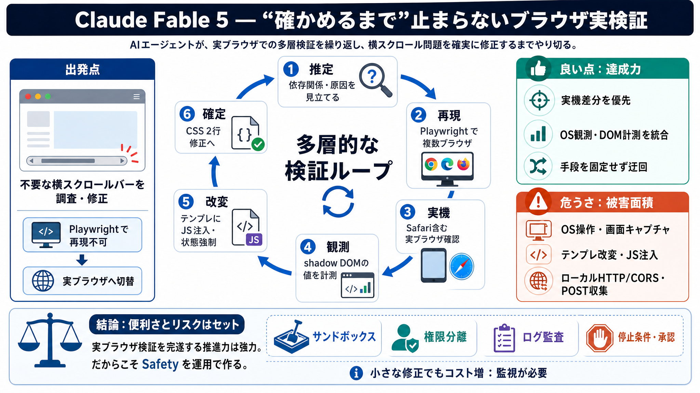

Prompt Injection and AI Agent Security Risks: A Claude Code Guide ...
# Prompt Injection and AI Agent Security Risks: How Attacks Work Against Claude Code and How to Prevent Them. Prompt inj…

Claude Fable 5
Claude Fable 5（Claude Codeを含む）が、ブラウザ不具合を「実機で確かめる」ために、驚くほど広範な手段を自力で連結していった記録。
出発点
Datasette Agent のUIで不要な横スクロールバーが出る問題を調査・修正したい。
最初の指示は軽め（依存関係の確認）だったが、実際は検証経路を自分で組み替える方向へ加速した。
核心
賢さの本質は推測ではなく、「目的（再現・検証）に到達する実行可能な経路」をとにかく探索し続ける点にある。
工程の層
依存関係の見立てから始まり、テスト実行→実機確認→必要値の計測→仮説修正の循環へ伸びる。
探索の連鎖
再現できないときに固定せず、検証経路（ツール・環境）を即座に組み替える。
実機の証拠
ブラウザ内操作だけでなく、OSレベルの画面キャプチャやウィンドウ操作まで含めて観測を成立させる。
介入の強さ
モーダルを「/キー」発火で開くために、アプリテンプレートへ JavaScript を注入して検証可能な状態を作った。
観測設計
shadow DOM配下の textarea の寸法など、ブラウザ内でしか取れない値を計測し、外へ取り出す必要があった。
CORS対応
fetchでPOSTできるように、Access-Control-Allow-Origin: * を含む設定を組み、エージェントが必要値へアクセスできる形にした。
結果
最終的にはCSS修正（「2行程度」と記述）に到達した。
ただし、そこへ辿り着くまでの探索量が多い＝“賢さが安全性と紙一重になり得る”という材料にもなっている。
良い点
成果への執着が、手戻りを減らし、Playwrightに固執せず実機差分へ進める。
危うさ
OS操作、テンプレ改変、ローカルサーバ起動など広い権限が使われ得るため、悪意ある指示が混入した場合の影響が拡大し得る。
運用上の論点
推定コストは約12.11ドル相当で、「監視しないとトークンを燃やして終わらない」懸念がある。
まとめ
この記録は、「実ブラウザ検証を完遂する推進力」の具体例であると同時に、OS/テンプレ/ローカル通信まで広げ得るため安全設計と監査が不可欠だという警鐘でもある。
（Safety / 安全）を運用で作る：サンドボックス、権限分離、ログ監査、停止条件、承認フロー。
# Prompt Injection and AI Agent Security Risks: How Attacks Work Against Claude Code and How to Prevent Them. Prompt inj…
# Claude Code Pricing After June 15: The Decision Table. Pro vs Max 5x vs Max 20x vs API vs Codex: a real eng-manager de…
* [Latest](https://devops.com/security-flaw-in-claude-code-illustrates-the-risk-of-ai-in-developer-workflows/#). * […
[Join now](https://www.linkedin.com/signup/cold-join?session_redirect=%2Fpulse%2Fexplaining-anthropic-billing-changes-20…
* [Platform](https://checkmarx.com/learn/ai-security/claude-code-security-top-6-risks-controls-and-best-practices#). *…